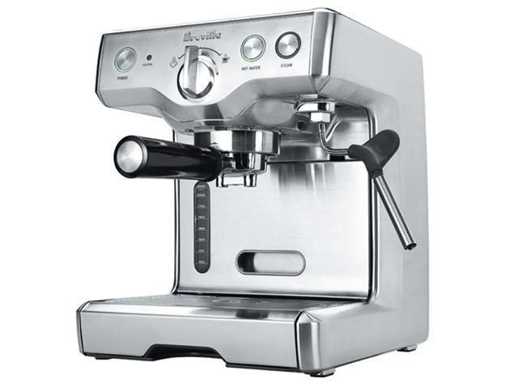

Consumer guide
Learn how to operate your Kawonator espresso machine.
Kawonator produces high-quality espresso machines for true coffee connoisseurs.
Kawonator KW100
The KW100 is a superior single-cup espresso machine model.
Kawonator KW200
The KW200 is a top-tier espresso machine capable of simultaneously brewing two cups of silky, aromatic espresso.